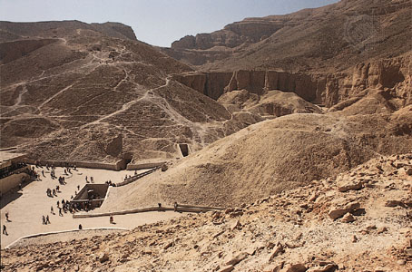
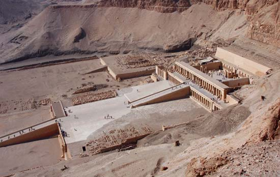
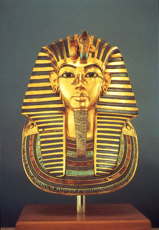

Valley of the Kings
Valley of the Kings, Arabic Wādī Al-Mulūk, also called Valley of the Tombs of the Kings or Arabic Wādī Bībān al-Mulūk, long narrow defile just west of the Nile River in Upper Egypt. It was part of the ancient city of Thebes and was the burial site of almost all the kings (pharaohs) of the 18th, 19th, and 20th dynasties (1539–1075 bce), from Thutmose I to Ramses X. Located in the hills behind Dayr al-Baḥrī, the 62 known tombs exhibit variety both in plan and in decoration. In 1979 UNESCO designated the valley part of the World Heritage site of ancient Thebes, which also includes Luxor, the Valley of the Queens, and Karnak.

Image: Tutankhamun’s tomb (lower left) in the Valley of the Kings, near Luxor (ancient Thebes), Egypt.

Image: Mortuary temple of Queen Hatshepsut in the Valley of the Kings, Thebes, Egypt.
Virtually all the tombs in the valley were cleared out in antiquity. Some had been partially robbed during the New Kingdom, but all were systematically denuded of their contents in the 21st dynasty, in an effort to protect the royal mummies and to recycle the rich funerary goods back into the royal treasury. In the time of Strabo (1st century bce), Greek travelers were able to visit 40 of the tombs. Several tombs were reused by Coptic monks, who left their own inscriptions on the walls. Only the little tomb of Tutankhamun (reigned 1333–23 bce), located on the floor of the valley and protected by a pile of rock chippings thrown down from a later Ramesside tomb, escaped pillage. The wonderful treasures that were exhumed from Tutankhamun’s tomb in 1922 and that now reside in the Egyptian Museum in Cairo vividly indicate how rich the burial of a great pharaoh of the empire’s heyday must have been. The longest tomb (number 20) belongs to Queen Hatshepsut (reigned c. 1472–58), whose burial chamber is nearly 700 feet (215 metres) from the entrance and descends 320 feet (100 metres) into the rock.
Image: Tutankhamun, gold funerary mask found in the king’s tomb, 14th century bce; in the Egyptian Museum, Cairo.
The largest and most complex tomb in the Valley of the Kings (number 5) was apparently built to contain the burial chambers of many of the sons of Ramses II (reigned 1279–13), the greatest king of the 19th dynasty. This tomb, which had been previously discovered but dismissed as insignificant, was again located in the late 1980s and partially excavated in the 1990s. The uppermost of the tomb’s two levels contains a central pillared hall and various corridors leading away to dozens of chambers.